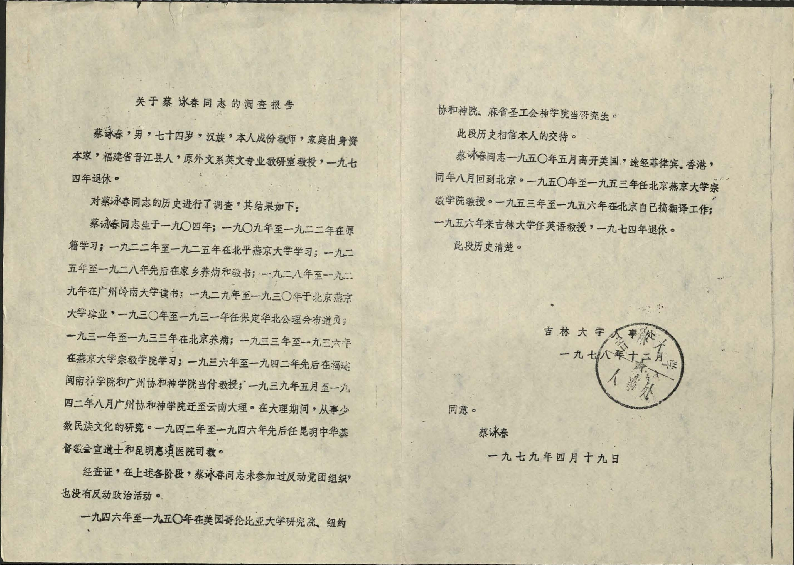

This website hosts selections from the diaries of Cai Yongchun, a Chinese Christian educator who lived from 1904 to 1983, that corresponds to today’s date.
Cai Yongchun received his political rehabilitation in 1979, at the age of 74, 4 years before his death. After all the interrogations, struggle sessions, and beatings he suffered since his return to his homeland in 1950, all the confessions, struggle sessions, and crises of faith, he was at last absolved of his status as a counterrevolutionary agent of imperialism. Raised a Christian, he paid dearly for his faith — a faith that I am not sure he kept throughout his trials, but to which he returned in his final years. His rehabilitation report reads as follows:
Regarding Comrade Cai Yongchun's Investigation Report Comrade Cai Yongchun, male, seventy-four years old, of Han ethnicity, a former teacher by profession, born to a capitalist family, originally from Jinjiang County, Fujian Province. He was a former professor in the Department of Foreign Languages, specializing in English, and retired in 1974. A historical investigation of Comrade Cai Yongchun was conducted, with the results as follows: Comrade Cai Yongchun was born in 1904. From 1909 to 1922, he studied in his hometown. From 1922 to 1925, he studied at Yenching University in Beiping. From 1925 to 1928, he alternated between recuperating in his hometown and teaching. From 1928 to 1929, he studied at Lingnan University in Guangzhou. From 1929 to 1930, he graduated from Yenching University in Beijing. From 1930 to 1931, he worked as a preacher for the North China General Mission in Baoding. From 1931 to 1933, he convalesced in Beijing. From 1933 to 1936, he studied at the School of Religion at Yenching University. From 1936 to 1942, he served as a professor at Minnan Theological Seminary in Fujian and Union Theological Seminary in Guangzhou. In May 1939, he moved to Dali, Yunnan, with Union Theological Seminary. During his time in Dali, he engaged in the study of minority cultures. From 1942 to 1946, he served as a missionary in Kunming for the China Inland Mission and as a bishop for Kunming Huixi Yunnan Hospital. Upon investigation, it has been verified that Comrade Cai Yongchun did not participate in any counter-revolutionary party or organization or engage in counter-revolutionary political activities during the aforementioned phases. From 1946 to 1950, he attended graduate school at Columbia University, Union Theological Seminary in New York, and Hartford Theological Seminary in Massachusetts, all in the United States. This part of history trusts in Comrade Cai Yongchun’s own account. In May 1950, Comrade Cai Yongchun left the United States, transiting through the Philippines and Hong Kong, and returned to Beijing in August of the same year. From 1950 to 1953, he served as a professor at the School of Religion at Yenching University in Beijing. From 1953 to 1956, he worked on his own on translation projects in Beijing. In 1956, he began teaching at Jilin University, and he retired in 1974. This historical account is clear. Agreed, Cai Yongchun
This historical account is clear as an autopsy. Perhaps the clinical conclusiveness of such reports was part of the magic they cast in returning their subjects to personhood. But I have no doubt that in the 4 remaining years of his life as a legitimate subject, Cai was haunted by the preceding 30 years during which he was made undead, a specter haunting the nation, a “cow demon and snake spirit.” In a posthumous biography of Cai, his wife records an instance when a committee asked him to document his experiences during the Cultural Revolution. He replied, “As for the experiences during that time, it's been so many years, and the past is the past. Due to my old age and poor memory, many things have long been forgotten. However, as requested, I will make an effort to recall and briefly outline a few events ….” The memories he recalled were of being accused as a foreign spy and then locked up in a university building for weeks, and whipped over a stool; being ordered to dig up and carry corpses for reburial, hit in the face for not digging well, and then denied medical treatment. He ended his report with, “I was beaten all over, covered in bruises, with one area turning blue and another turning purple. As for being publicly humiliated, paraded through the streets, and subjected to standing punishments, it's well known and doesn't need further elaboration. Due to various forms of torture, my body suffered significant damage. Initially, I developed edema and high blood pressure, followed by acute bronchitis. Each illness occurred in rapid succession, leading to a continuous series of asthma attacks. The condition became so severe that it reached a dangerous stage. The doctor privately informed Xiuying [Cai’s wife], saying that my illness could take a sudden turn for the worse, and preparations should be made.” No image so graphic appears in Cai’s diaries, which span from 1952 to 1983. Their pages are suffused with a more subtle form of violence — a constant sense of performance for a surveilling eye, self-criticisms and doubts, records of physical violence dealt to others but not to himself, spates of illness, barely any mention of friends or family or even the weather. I had come upon Cai’s archives quite by chance, when idly browsing through Yale’s library collections brought me to his name. I had not heard of him before; online searches in English and Chinese turned up few results. By all counts, he seemed an ordinary man. Just one more face among the masses, an anonymous face made into an enemy of the state just like any other of the 30-some millions during the Cultural Revolution, condemned and endured (all the same) like any other. When I made my first request to view his materials, I had not expected that I would end up spending the next four months coming back to them. It was the unease that held me. I had come to these diaries expecting signs of his life, and yet all I could see, day after day, was a bare minimum existence, all his time spent studying Maoist texts, performing penal labor, and dealing with recurring bouts of sickness. I watched as his existence stretched to meet the spiritual heights of patriotic slogans, and compressed to minimize any personal thoughts or private life. The document boxes began to look like coffins, the diaries as corpses. I realized that I was reading the diaries of a ghost. And they were haunting me. Yet his ghost retained an all too corporeal body. One could even say that his body itself indexed all the ways in which he failed to qualify as a full person amongst comrades. The bruises left by the Red Guards’ belts, his asthma attacks and fevers, his exhaustion while reforming through labor — all these marked him as a “sick man of Asia,” the personification of the nation’s reviled semi-feudal, semi-colonial past. He was a far cry from Communist martyrs like Ouyang Hai and Dongcun Rui, who even at the moment of their death were depicted with rosy cheeks, stiff muscles, and unbruised skin. A better representation of his body might be found in 16th-17th century depictions of Christian martyrs: St. Sebastian with all his arrows, St. Bartholomew with his flayed skin. But regardless of whether they were Communist or Christian, the martyrs all shared a certain look. They gazed out of their suffering at some angel or heaven or flag or chairman above. By all historical accounts, counterrevolutionary elements like Cai could only look in one direction — down. With his neck bowed under the weight of the plaques that decried his crimes, I cannot say if Cai’s inner gaze was pointed anywhere else. Also, the martyrs died, and were released from their suffering. Ordinary men like Cai were not. It is not for anyone to say. But here, you can try to see through his eyes, as I did. I hope that you can see farther than either of us.
Addendum Over 600 years before Cai received his political rehabilitation, Song Dynasty judge Song Ci wrote 洗冤集录, or The Washing Away of Wrongs. Considered to be the first ever written book of forensic science, it goes into exacting detail on all the ways to differentiate between causes of death, from drowning, to suicide, to tripping, poisoning, drunkenness, tiger bites, lightning, snake and bug bites, cow and horse kicks, and more. In its foreword, Song Ci also writes, 则其洗冤泽物，当与起死回生同一功用矣。Or, The washing away of wrongs is tantamount to reviving the dead.